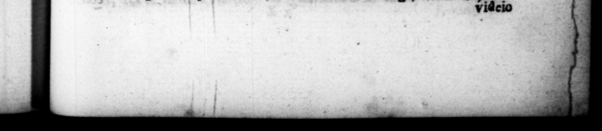

T. FL. VESPA8 8. un ene. Affe ark, waͤnente + * Kieran, omaſerac, . FE uras a6. phi| COOLER, leMale tu Licinium Ma5 — _ impudicitiæ, 25 meritorum fiducia, minus ui reverentem, nungquap ni6 clam, & haZenus retaxare 5 ut apud communem quem amicum guerens ad— but preſumi 5s des but pruning» 1 upon rudely, —— we 4s in cam lai uk uſulz, Re tamen vir vium . in os vis Liberalis, in pleading 6 rich man under (roſe 7 ſay, What's: that parchus has an million of ſeſterces ? be 2 rei auſum Caen iple it Demetrium in itinere obvium Gi poſt ominationem, ac neque aſſurgere, neque ſalntate ſe = » dignantem, latrantem .eti- 45 Fa nefcia = ſatis habuit FN nſarum inimicitiarunique gin ime memor exe 1 ſtellii boſtis ſai. K. m ſplendidiſſime maritavic, ben etiam & inſtrux it. idum e um interdicta au one, querent 175 FT aut quo 1 . Amel 2 s, = But 2 Te 7 ame 7 ut ſuſpicions ali wards to beg Th par vel metu ad perniciem. . reſentment Is . By compe lleretur tan- words, For be was abtuit, ut » RM Sq wy im &. em fete atque * piclen,, or em 9 bss friends adviſed; him * — At ius of. | he was commonly, helteys . Snpperial 1 e E in t 52 temete quis dibus * 79 — E gabe 2 e % * 2 8 "Eel: e *
